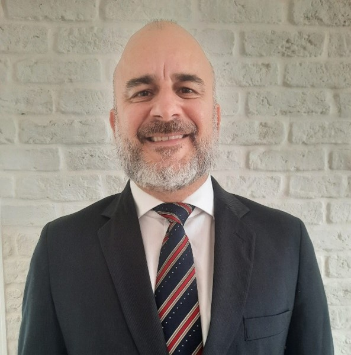
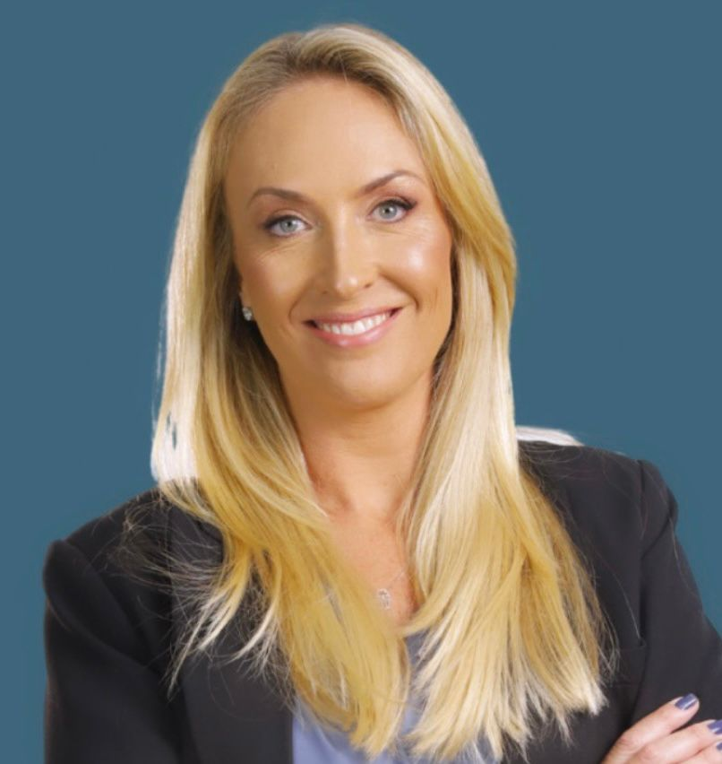
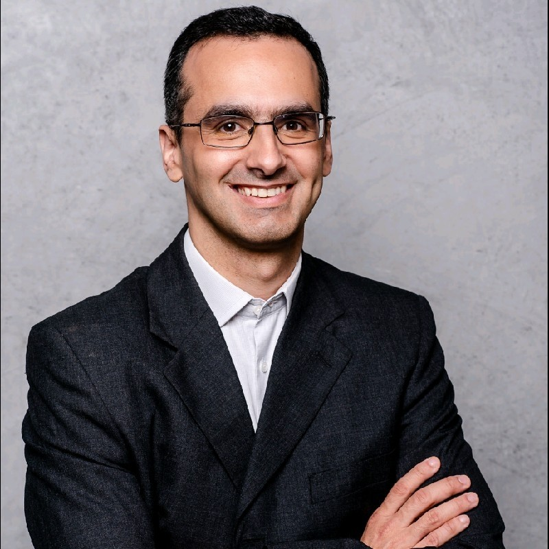

O I Seminário Fluminense de Reforma Tributária nasce da preocupação dos municípios fluminenses com os impactos da Reforma Tributária em todo o Estado do Rio de Janeiro. É certo que a Reforma Tributária terá repercussões diversas na dinâmica da economia nacional, alterando sensivelmente o cenário de alocação de recursos pelos setores produtivos e modificando o cenário fiscal dos Entes Federados. Fato é que, embora muitos Estados e Municípios sejam beneficiados, alguns perderão recursos ou, no mínimo, terão suas curvas de crescimento de arrecadação prejudicadas.
Nesse sentido, o Seminário surge como uma oportunidade para que Administrações Tributárias, representantes do Setor Produtivo, Acadêmicos e representantes da Advocacia Tributária reúnam esforços no sentido de compreender os desafios e as oportunidades que a nova tributação sobre o consumo no país nos trará.
10h - Painel 1 - Situação fiscal dos municípios fluminenses e do Estado do Rio de Janeiro no contexto da reforma tributária
Dados da situação fiscal do ERJ e de seus Municípios, colocando em perspectiva a Reforma
Tributária com seus desafios, incertezas e oportunidades.
Economista, especialista em Modelos Macroeconômicos e Políticas Públicas, com mais de 10 anos de experiência. Mestre em Economia pela Universidade do Estado do Rio de Janeiro, com especialização em Modelagem Econômica na US Naval Academy. Foi professor de Macro e Microeconomia da UERJ e atualmente é economista chefe da FIRJAN.
Mestre em Administração Pública e Governo pela Fundação Getúlio Vargas (FGV), graduada em Gestão de Políticas Públicas pela Universidade de São Paulo (USP), pós-graduanda em Finanças Públicas e Auditoria (UFRJ), com curso executivo para líderes públicos na School of International and Public Affairs da Universidade de Columbia (NY).
Formado em Ciências Econômicas pela Universidade Federal Fluminense, é Auditor Fiscal da Receita Estadual desde 1990. Desde então, já desempenhou diversas funções de gestão e assessoria na Sefaz-RJ, como Subsecretário de Receita, Superintendente de Fiscalização, Assessor do Gabinete, Auditor Tributário na Junta de Revisão Fiscal e Superintendente de Planejamento, Avaliação e Modernização. Possui mestrado e doutorado pela Universidade do Estado do Rio de Janeiro.
13h30 - Mesa 1 - Parâmetros para estabelecimento das alíquotas e
complexidades na quantificação do IBS.
Os desafios para fixação de uma alíquota de referência/padrão, critérios de distribuição da cota-parte do IBS municipal, fundos de compensação por perda de arrecadação, eficácia do split payment para redução da alíquota de referência, entre outros fatores que influenciem a carga tributária do IBS e a consequente arrecadação estadual/municipal.
Possui graduação, mestrado e doutorado em Direito pela UERJ. É Procurador do Município do Rio de Janeiro e Professor de Direito Tributário e Financeiro da UERJ. É advogado tributarista e autor de livros e artigos na área do Direito Tributário.

Graduado em Engenharia Civil pela UniFOA e em Direito pela UFF. Exerceu o cargo de Fiscal de Tributos em Volta Redonda/RJ no período de 1995 a 2002. É Auditor Fiscal da Receita Municipal de Niterói desde 2002, ocupando a função de representante fazendário no Conselho de Contribuintes do município a partir de 2019
Mestre em Direito Tributário do Instituto Brasileiro de Estudos Tributário (IBET). Pós-graduado em Direito Tributário pelo IBET e em Direito Público e Privado, com ênfase em Direito Tributário, pelo Instituto Superior do Ministério Público do Estado do Rio de Janeiro (ISMP/RJ). Professor de Direito Tributário do IBET e dos cursos de Gestão Tributária e Fiscalização Tributária Municipal do Instituto Brasileiro de Administração Municipal (IBAM). Conteúdista do Curso de Gestão Tributária Municipal publicado pela Escola Nacional da Administração Pública (ENAP, vinculada ao Ministério do Planejamento, Desenvolvimento e Gestão). Diretor e membro fundador da Associação dos Auditores e Fiscais Tributários Municipais do Estado do Rio de Janeiro - AFIMERJ. Auditor Fiscal Municipal do Município de Japeri/RJ e Membro titular da Comissão Municipal de Assuntos Tributários (COMAT).
14h30 - Mesa 2 - Operações imobiliárias no IBS X ITBI
Pontos de encontro e distanciamento entre o IBS e o ITBI nas operações imobiliárias, e como a regulamentação do IBS pode ou não afetar o ITBI. Valor de referência, momento da ocorrência do fato gerador dos impostos, possibilidade de bitributação, são alguns dos tópicos que podem ser abordados pelos debatedores.

Advogada, contadora, fundadora do IG e canal de YouTube @tributarioatual, mestre em Direito Financeiro e Tributário pela UERJ, especialista em Direito Tributário pelo IBET, com ampla experiência em planejamentos tributários, consultivo e contencioso tributário, consultoria fiscal e societária. É professora na UERJ, FGV e IBMEC, autora de livros jurídicos, Conselheira Fiscal do Projeto Grael, Coordenadora Acadêmica da Comissão de Direito Tributário da OAB/RJ Barra e membro da ABDF
Mestre em Direito Público pela Universidade Estadual do Rio de Janeiro, com linha de pesquisa em Finanças Públicas, Tributação e Desenvolvimento Econômico e Especialista em Direito Fiscal pela PUC-RJ. Juan atuou como Analista da Fazenda Estadual – SEFAZ-RJ – entre outubro de 2013 e março de 2017. Ingressou como servidor público municipal de carreira no cargo de Auditor Fiscal da Receita Municipal – SMF Niterói em março de 2017. Antes de assumir a subsecretaria de Receita foi Coordenador de Tributação.
Possui graduação e mestrado em Direito pela UERJ. É Procurador do Município do Rio de Janeiro, membro da Escola de Magistratura do Estado do Rio de Janeiro (EMERJ), Assessor Jurídico da Associação Brasileira das Secretarias das Finanças das Capitais (ABRASF) e Advogado. Autor de artigos e capítulos de coletâneas e livros sobre Direito Constitucional, Administrativo, Processo Civil, Financeiro, Tributário.
16h - Mesa 3 - Conceito de destino nas operações portuárias e na
cadeia do óleo e gás
Questões relativas ao local da incidência do fato gerador do IBS e possível impacto na arrecadação dos Municípios fluminenses, considerando a ausência do valor adicionado como critério de distribuição da cota-parte do IBS, a incidência monofásica nos combustíveis e as regras de definição do destino nas operações do setor portuário/óleo e gás.

Diretor Jurídico Tributário e Corporativo na Vibra Energia (reporte ao VP Jurídico) Mestrando em Finanças, Tributação e Desenvolvimento na UERJ (2024.1) Sócio do Projeto Tributário em Jogo Membro GDT, ABDF e CEAT OAB-RJ.
Graduado em Comunicação Social/Jornalismo pela UFF e em Direito pela Universidade Estácio de Sá. Mestrando em Filosofia pela UFRJ. Foi Técnico do Tesouro Nacional (Secretaria da Receita Federal) e há mais de 20 anos é Auditor Fiscal da Secretaria de Fazenda de Niterói, onde ocupa o cargo de Presidente do Conselho de Contribuintes.
17h - Mesa 4 - Representatividade dos Municípios no Comitê Gestor
do IBS
A regulamentação da reforma tributária no que tange a representatividade dos Municípios no Comitê Gestor do IBS. Neste ponto poderão ser abordadas questões relacionadas ao papel do Comitê Gestor, sua capacidade de efetivamente servir como um ente representativo dos interesses comuns de estados e municípios, discricionariedade técnica do órgão, contencioso administrativo, entre outros aspectos relacionados à atuação do Comitê.
Economista, com mestrado pela UFF e doutorado pela UERJ. É sócio da FINANCE Análise e Consultoria Econômica e consultor econômico da FNP. Atua há mais de 15 anos na área de finanças públicas e possui diversas publicações (artigos, capítulos de livros, apresentações, produções técnicas) sobre tributação, federalismo fiscal e política fiscal.
Formado em Ciências Navais pela Escola Naval e pós graduado em Ciências Militares pela Escola de Aperfeiçoamento do Exército Brasileiro. Auditor Fiscal do Município de Niterói. Ex-subsecretário de Receita da Fazenda Municipal de Niterói.
Doutor em Direito Econômico, Financeiro e Tributário pela USP; MBA em Gestão Pública Tributária pela Fundação Dom Cabral (FDC). Professor de Direito Tributário no Insper, FIPECAFI, IBDT e IBET. Auditor Fiscal e Assessor Especial da Secretaria Municipal da Fazenda de São Paulo. Representante de São Paulo na Câmara Técnica Permanente (CTP) da Associação Brasileira das Secretarias de Finanças das Capitais (ABRASF). Membro do Conselho de Altos Estudos de Finanças e Tributação (CAEFT) da Associação Comercial de São Paulo (ACSP).